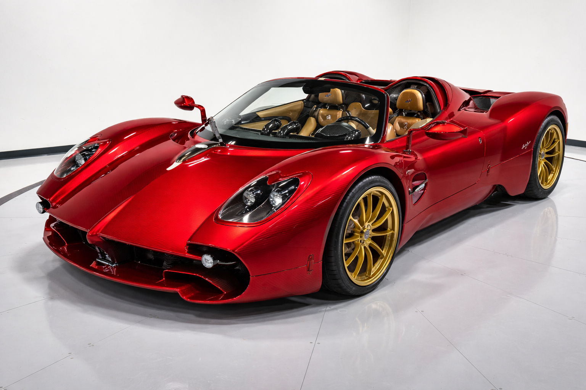
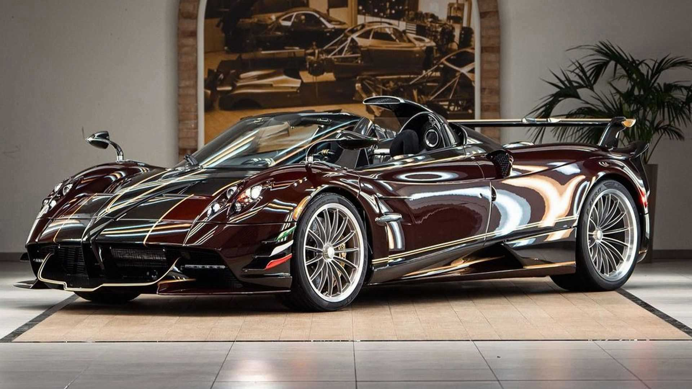

THE UTOPIA ERA

UTOPIA COUPE
The pure analog experience. A 7-speed manual masterpiece designed to connect the driver directly to the V12. Every component is engineered to deliver an emotional and mechanical connection. The interior blends timeless craftsmanship with modern precision. Lightweight materials enhance agility and responsiveness at every turn. Its design philosophy celebrates simplicity without sacrificing performance. This is driving in its most authentic and engaging form.

UTOPIA ROADSTER
Uncompromised engineering. The Roadster achieves the same weight and rigidity as the Coupe for open-top speed.
Designed to deliver an exhilarating open-air driving experience.
Advanced aerodynamics ensure stability even at extreme speeds.
Every detail is optimized for both beauty and performance.
The removable roof enhances versatility without compromising structure.
It offers a perfect balance between luxury and raw power.

GRANDI COMPLICAZIONI
The pinnacle of personalization. Unique materials and finishes crafted by Pagani’s special projects division.
Each model is tailored to the vision of its owner.
Rare materials and innovative techniques define its identity.
No two cars are ever the same, making each one truly exclusive.
It represents the ultimate expression of artistry and engineering.
This is where imagination meets limitless craftsmanship.